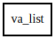

va_list – glib-2.0 Reference Manual
Packages
glib-2.0
va_list
va_list
va_list.copy
arg
va_list
Object Hierarchy:

Description:
[
SimpleType
]
[
CCode
( cprefix =
"va_"
, destroy_function =
"va_end"
, has_type_id =
false
, lvalue_access =
false
) ]
public
struct
va_list
Package:
glib-2.0
Content:
Creation methods:
public
va_list
()
public
va_list.copy
(
va_list
src)
Methods:
public
unowned
G
arg
<
G
> ()